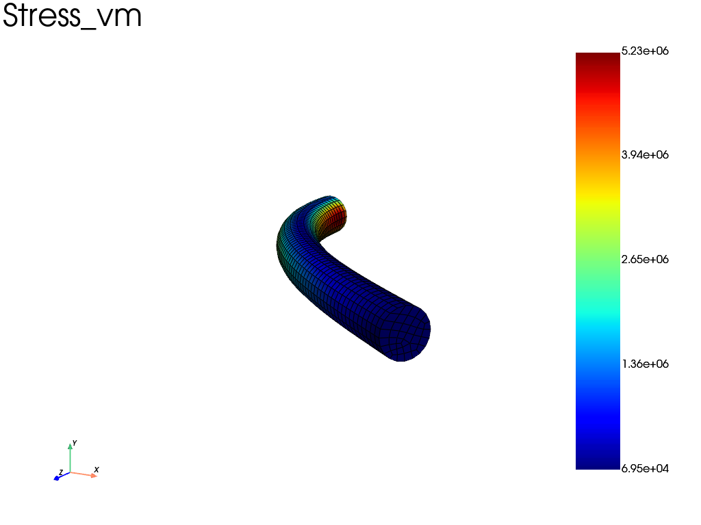

Note
Go to the end to download the full example code.
Finite-strain Neo-Hookean cantilever (rigid cap)
A slender, nearly-incompressible cylinder is clamped at its base and bent by a transverse load applied to a rigid cap tied to its top face. It is loaded well into the large-deflection, finite-strain regime (tip deflection of order the cylinder length, ~40 % local strain at the clamped base).
This exercises the updated-lagrangian hyperelastic path of
fedoo.weakform.StressEquilibrium with a simcoon NEOHC (compressible
Neo-Hookean) law. The strain energy is
with \(\mu = E/2(1+\nu)\) the shear modulus and \(\kappa = E/3(1-2\nu)\) the bulk modulus.
The rigid cap is a fedoo.constraint.RigidTie: it ties the whole top face
to six global rigid-body DOFs (RigidDispX/Y/Z, RigidRotX/Y/Z). Here the
cap is driven by prescribing its transverse displacement RigidDispX.
The mesh is read from an Abaqus .inp deck. Two are provided and give the same
result: a linear hex8 mesh solved with reduced integration
(fedoo.weakform.StressEquilibriumRI, which avoids volumetric locking at
\(\nu = 0.49\)), and a quadratic hex20 mesh solved with full integration
(fedoo.weakform.StressEquilibrium).
Displacement control is used because static force control is ill-conditioned
for such a flexible structure: the cap’s transverse stiffness is tiny next to the
internal stiffness, so a force increment demands a large displacement jump.
Loading by force is done through implicit dynamics
(fedoo.weakform.ImplicitDynamic), where the cap’s
inertia/damping regularise that soft mode.

Iter 1 - Time: 0.05000 - dt 0.05000 - NR iter: 2 - Err: 0.00066
Iter 2 - Time: 0.10000 - dt 0.06250 - NR iter: 2 - Err: 0.00068
Iter 3 - Time: 0.15000 - dt 0.06250 - NR iter: 2 - Err: 0.00069
Iter 4 - Time: 0.20000 - dt 0.06250 - NR iter: 2 - Err: 0.00070
Iter 5 - Time: 0.25000 - dt 0.06250 - NR iter: 2 - Err: 0.00070
Iter 6 - Time: 0.30000 - dt 0.06250 - NR iter: 2 - Err: 0.00072
Iter 7 - Time: 0.35000 - dt 0.06250 - NR iter: 2 - Err: 0.00074
Iter 8 - Time: 0.40000 - dt 0.06250 - NR iter: 2 - Err: 0.00076
Iter 9 - Time: 0.45000 - dt 0.06250 - NR iter: 2 - Err: 0.00081
Iter 10 - Time: 0.50000 - dt 0.06250 - NR iter: 2 - Err: 0.00086
Iter 11 - Time: 0.55000 - dt 0.06250 - NR iter: 2 - Err: 0.00095
Iter 12 - Time: 0.60000 - dt 0.06250 - NR iter: 3 - Err: 0.00010
Iter 13 - Time: 0.65000 - dt 0.06250 - NR iter: 3 - Err: 0.00007
Iter 14 - Time: 0.70000 - dt 0.06250 - NR iter: 3 - Err: 0.00007
Iter 15 - Time: 0.75000 - dt 0.06250 - NR iter: 3 - Err: 0.00006
Iter 16 - Time: 0.80000 - dt 0.06250 - NR iter: 3 - Err: 0.00006
Iter 17 - Time: 0.85000 - dt 0.06250 - NR iter: 3 - Err: 0.00009
Iter 18 - Time: 0.90000 - dt 0.06250 - NR iter: 3 - Err: 0.00016
Iter 19 - Time: 0.95000 - dt 0.06250 - NR iter: 3 - Err: 0.00029
Iter 20 - Time: 1.00000 - dt 0.06250 - NR iter: 3 - Err: 0.00050
max |displacement| : 3.2793e-02 m (L = 0.05)
max von Mises stress: 5.2275e+06 Pa
import numpy as np
import fedoo as fd
# --------------------------------------------------------------------------
# Parameters
# --------------------------------------------------------------------------
L, R = 0.05, 0.0025 # cylinder length / radius [m]
E, nu = 60e6, 0.49 # Young's modulus [Pa], Poisson's ratio
mu = E / (2 * (1 + nu))
kappa = E / (3 * (1 - 2 * nu))
U_CAP = 0.03 # prescribed transverse cap displacement [m] (~0.6 L)
# "linear" -> hex8, reduced integration (StressEquilibriumRI); faster
# "quadratic" -> hex20, full integration (StressEquilibrium)
MESH = "linear"
# path relative to this example's directory (as run by sphinx-gallery)
MESH_FILE = (
"../../util/meshes/cyl08_hexa_lin.inp"
if MESH == "linear"
else "../../util/meshes/cyl08_hexa_quad.inp"
)
fd.ModelingSpace("3D")
# Read the C3D8/C3D20 cylinder mesh from its Abaqus .inp file.
mesh = fd.Mesh.read(MESH_FILE)
z = mesh.nodes[:, 2]
bottom = mesh.find_nodes("Z", z.min()) # clamped base
top = mesh.find_nodes("Z", z.max()) # tied to the rigid cap
# --------------------------------------------------------------------------
# Material, weak form, assembly
# --------------------------------------------------------------------------
material = fd.constitutivelaw.Simcoon("NEOHC", [mu, kappa], name="neohookean")
if mesh.elm_type == "hex8":
# reduced integration + hourglass control avoids volumetric locking
wf = fd.weakform.StressEquilibriumRI(material, nlgeom="UL")
stress_wf = wf.list_weakform[0]
else: # hex20: full integration
wf = fd.weakform.StressEquilibrium(material, nlgeom="UL")
stress_wf = wf
# initial-stress stiffness, needed in the tangent under large rotations
stress_wf.geometric_stiffness = True
assembly = fd.Assembly.create(wf, mesh, name="assembly")
# --------------------------------------------------------------------------
# Problem, boundary conditions, solve (displacement control)
# --------------------------------------------------------------------------
pb = fd.problem.NonLinear(assembly)
pb.set_nr_criterion("Displacement", err0=1.0, tol=1e-3, max_subiter=20)
results = pb.add_output("neohookean_cantilever", assembly, ["Disp", "Stress", "Strain"])
pb.bc.add(fd.constraint.RigidTie(top)) # rigid cap on the top face
pb.bc.add("Dirichlet", bottom, "Disp", 0) # clamp the base
pb.bc.add("Dirichlet", "RigidDispX", U_CAP) # drive the cap transversely
pb.nlsolve(dt=0.05, tmax=1.0, update_dt=True, print_info=1, interval_output=0.05)
# --------------------------------------------------------------------------
# Post-processing
# --------------------------------------------------------------------------
results.load(results.n_iter - 1) # last (fully-loaded) increment
disp = results.get_data("Disp", None, "Node")
print(f"max |displacement| : {np.linalg.norm(disp, axis=0).max():.4e} m (L = {L})")
print(f"max von Mises stress: {results.get_data('Stress', 'vm', 'Node').max():.4e} Pa")
results.plot("Stress", component="vm", data_type="Node", show=True)
Total running time of the script: (0 minutes 13.392 seconds)